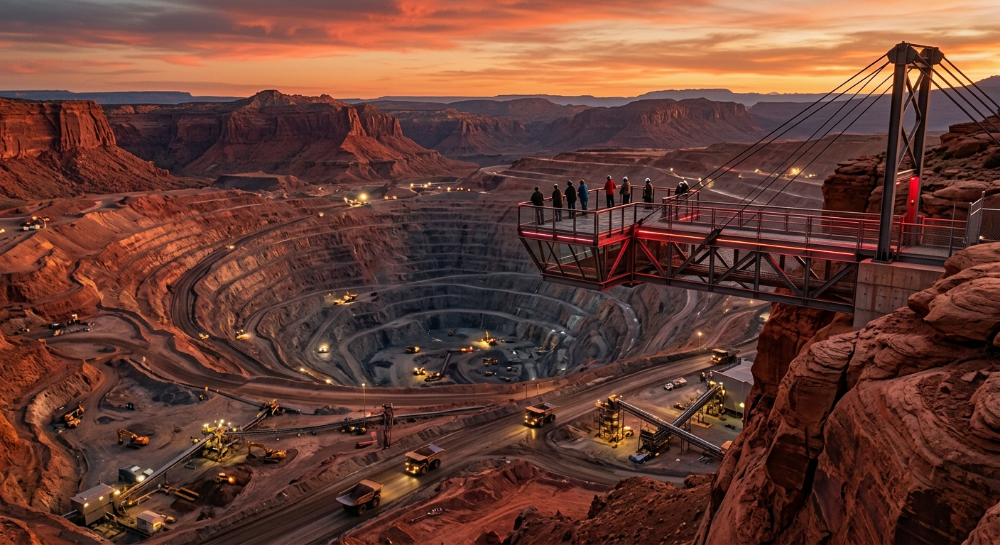
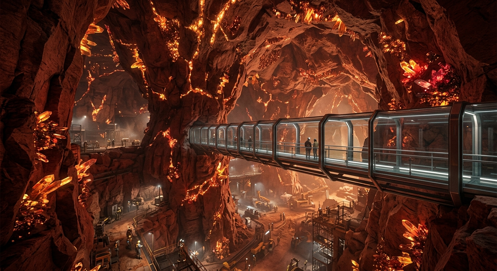
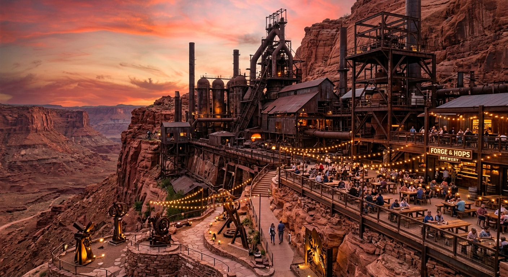

Qué Visitar en Antarion
Explora las maravillas industriales y astronómicas que nuestra ciudad tiene para ofrecer.
El Crisol Extremo

Descripción: Un impresionante mirador voladizo construido en acero sobre la gigantesca fosa minera a cielo abierto. De noche, se ilumina con luces carmesí en homenaje a la supergigante Antares.
Ubicación: Zona Alta de la Cordillera, Sector Este.
(Ver en Google Maps)
Qué hacer: Práctica de deportes extremos como tirolesa de alta velocidad y salto bungee sobre la sima.
Por qué visitarlo: Ofrece la vista panorámica más impactante de la brecha entre la industria humana y la escala de la montaña.
Los Cañones de Cristal

Descripción: Una red de pasajes y túneles subterráneos donde se preservaron galerías de extracción revestidas con capas transparentes.
Ubicación: Distrito del Subsuelo, Nivel -2.
(Ver en Google Maps)
Qué hacer: Recorridos guiados por miembros de Los Subterráneos, fotocaminatas subterráneas y talleres de geología.
Por qué visitarlo: Permite contemplar la belleza natural de las vetas minerales relucientes bajo luz ultravioleta.
La Fundición Vieja

Patrimonio Histórico
Descripción: El antiguo núcleo siderúrgico de la ciudad, rehabilitado de forma sostenible para transformarse en un punto de encuentro sociocultural.
Ubicación: Valle del Hierro, Distrito Central.
(Ver en Google Maps)
Qué hacer: Recorrer galerías de arte en metal organizadas por Los Alquimistas, degustar gastronomía local y asistir a recitales nocturnos.
Por qué visitarlo: Es el corazón del movimiento artístico urbano y el mejor lugar para probar la oferta gastronómica regional.